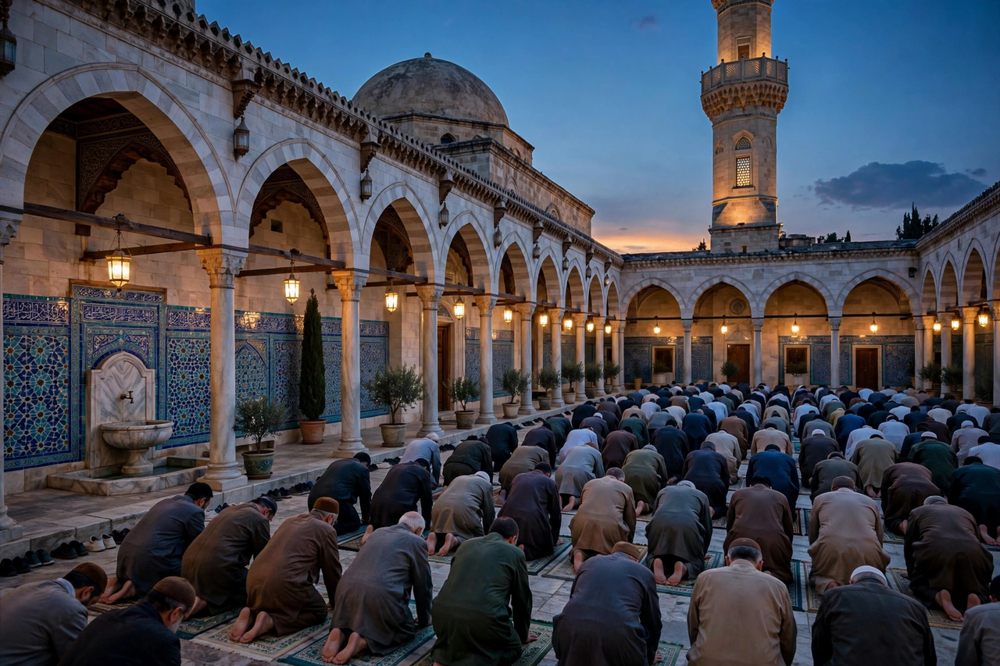

Muslim
A Muslim (Arabic: مُسْلِم, Muslim) is an adherent of Islam, the monotheistic Abrahamic religion founded on the teachings of the Quran, believed by Muslims to be the word of God (Allah) as revealed to the prophet Muhammad. The word muslim literally means "one who submits" (to God). Muslims constitute the world's second-largest religious population, numbering roughly two billion people — about a quarter of humanity — as of the early 2020s.

| Muslims | |
|---|---|
| Total population | c. 2 billion (c. 2020) |
| Religion | Islam (Sunni c. 87–90%, Shia c. 10–13%) |
| Scripture | Quran; Hadith |
| Languages | Arabic (liturgical), and hundreds of others |
| Largest populations | Indonesia, Pakistan, India, Bangladesh |
Beliefs and practice
Central to Muslim belief is tawhid, the absolute oneness of God, and the prophethood of Muhammad as the final messenger in a line including Abraham, Moses, and Jesus, all of whom Muslims revere. Core practices are summarised in the Five Pillars of Islam: the profession of faith (shahada), the five daily prayers (salah), almsgiving (zakat), fasting during Ramadan (sawm), and the pilgrimage to Mecca (hajj) once in a lifetime for those able. The two major festivals are Eid al-Fitr, ending Ramadan, and Eid al-Adha, the festival of sacrifice.
Denominations
The largest branch is Sunni Islam, followed by Shia Islam; the division originated in the dispute over succession to Muhammad after his death in 632 CE. Other traditions include Sufism, the mystical dimension practised across branches, and smaller communities such as the Ibadi. Indonesia is the world's most populous Muslim-majority country, while the largest Muslim minority population lives in India.
History
From its origins in 7th-century Arabia, Islam spread through trade, scholarship, and conquest across the Middle East, North Africa, Iberia, Central and South Asia, and Southeast Asia. Muslim civilisations made major contributions to mathematics, astronomy, medicine, philosophy, and architecture during the Islamic Golden Age (roughly 8th–13th centuries). Today Muslim communities exist in nearly every country, and Islam is the fastest-growing major religion, largely through demography.